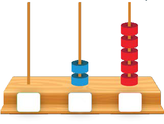
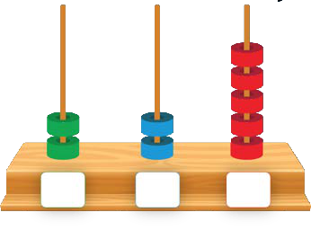
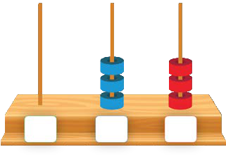
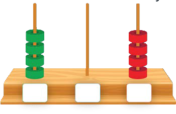
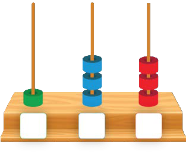
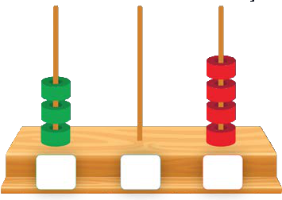

Zoezi la sita
Andika kwa tarakimu namba zinazowakilishwa na Abakasi. Swali la kwanza ni mfano.
Mamia, makumi, mamoja.

25
Swali la pili.Mamia, makumi, mamoja.

DashiDashiDashiDashiSwali la tatu.Mamia, makumi, mamoja.

DashiDashiDashiDashiSwali la nne.Mamia, makumi, mamoja.

DashiDashiDashiDashiSwali la tano.Mamia, makumi, mamoja.

DashiDashiDashiDashiSwali la sita.Mamia, makumi, mamoja.

DashiDashiDashiDashi25